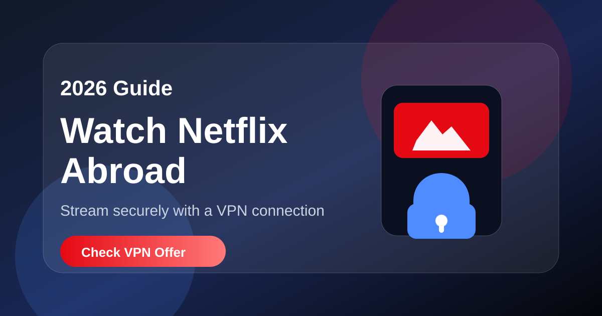

2026 Streaming Guide
How to Watch Netflix Abroad
Traveling or living outside your usual region? Netflix libraries can change by country. A VPN can help you connect securely and access streaming from a location you choose.
Affiliate disclosure: This page contains affiliate links. I may earn a commission if you purchase through the link, at no extra cost to you.

Why Netflix Looks Different Abroad
Netflix catalogs can vary depending on your location. When you travel, the shows and movies available to you may change because streaming rights differ by region.
How a VPN Helps
A VPN creates a secure connection and lets you choose a virtual location. This can make your browsing more private and help you access services while traveling.
Best For
- Travelers who want a familiar streaming experience
- People using public Wi-Fi in hotels, airports, and cafés
- Users who want an extra privacy layer while browsing
Start Watching More Securely
Set up takes only a few minutes. Use the button below to check the current NordVPN offer.
Check NordVPN OfferFAQ
Is using a VPN difficult?
No. Most VPN apps are simple: install, log in, choose a location, and connect.
Does a VPN improve privacy on public Wi-Fi?
Yes, a VPN can encrypt your connection, which is useful when using Wi-Fi in cafés, hotels, and airports.
Will Netflix always work with every VPN?
Streaming access can change over time. Use a reputable VPN and check the service’s current support information.